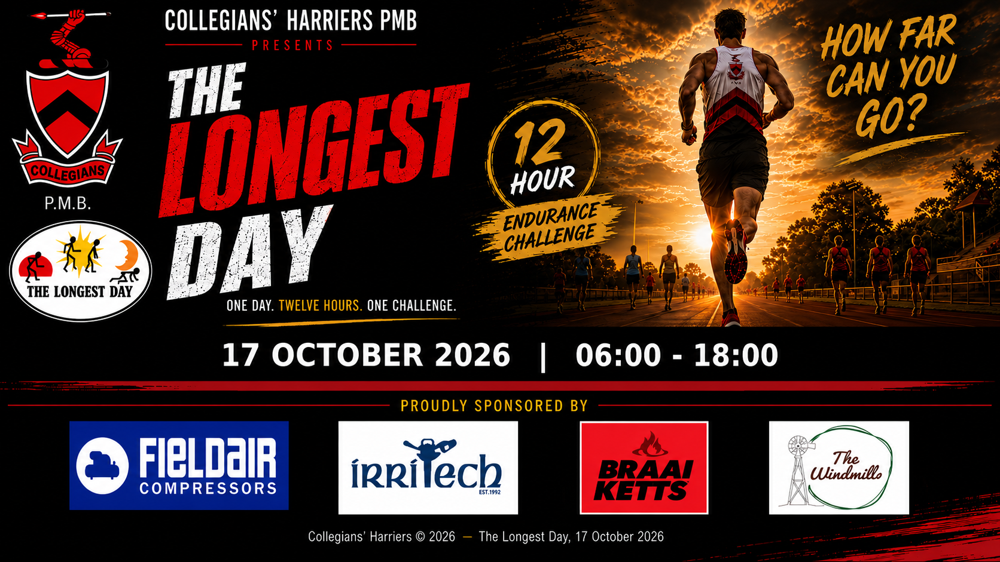

Solo runners & walkers
Minimum age 20. Official finishers complete at least 80 km running or 60 km walking during the twelve hours.
How far can you go? Twelve hours on the grassed Collegians sportsfield for solo runners, solo walkers and teams.
Select the flyer to open the full-size artwork and view all sponsor details.

The Longest Day gives runners and walkers twelve hours to build their distance on the Collegians Club sportsfield. Enter solo, share the day with a team or take on one of the dedicated 2026 team competitions.
Official finisher distances apply to solo and team running and walking categories, while the Schools Team competition rewards the first team to reach its 80 km maximum in the fastest recorded time.
Five ways to take part, from a full solo effort to the new Schools and Over-60s competitions.
Minimum age 20. Official finishers complete at least 80 km running or 60 km walking during the twelve hours.
Minimum age 19. Team members rotate and may complete any distance during their turns.
Minimum age 14. The 2026 programme includes the dedicated Schools and Over-60s team categories.
Four-person school teams race to an 80 km maximum. The first team to reach 80 km in the fastest recorded time wins; distance after 80 km does not count.
Four-person over-60s teams are ranked by total distance. Runner teams require 80 km and walker teams 60 km to be official finishers.
The key details participants need before the start. The approved full event rules will be linked here when supplied.
Collection opens in the Collegians Club Hall.
Be ready for the pre-race briefing before the start.
Twelve hours of running and walking begin.
Final distances determine finishers and rankings.
Walkers use the inside lane and runners use the outside lane. Participants must remain in their allocated lane.
Team runners may rotate and complete any distance during their turns within the event rules.
Runner categories require at least 80 km and walker categories at least 60 km unless the specific competition states otherwise.
The published event information limits the field to 100 runners and 50 walkers, with a team regarded as one entry.
Published entry fees range from R450 to R1,160 depending on the category. The confirmed online entry link and approved full rules document will be added to this page when supplied.
Event enquiries →Contact the event team for Longest Day-specific questions.
Confirmed entry and full-rules links will be added to the event page once supplied.
Back to events →Use the club Contact page for general event enquiries and social channels.
Contact the club →381 Boshoff Street · Pietermaritzburg · KwaZulu-Natal